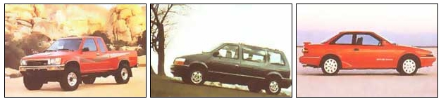
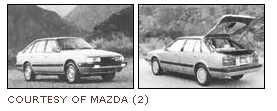
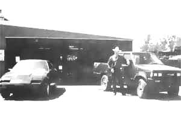

YOUR MONEY'S WORTH
How to save $5,000 per year on your transportation expenses... and love doing it.
Maya is the word for illusion in the Far East. In the West it is called Consumerism. Back when my wife and I were making decent salaries, it seemed like we were making more than enough money on paper, but had little to show for it at the end of the month. We simply spent too much, like the good consumers we were. I felt as if I was the recipient of a David Copperfield disappearing trick. "Where did it all go?" I continually wondered. I never wanted something for nothing, but was gradually becoming convinced that I was getting nothing for something.
So I did some very thoughtful analysis of my financial situation. I discovered that a major black hole in my wallet was the money I poured into automobiles-money that I would never recover.
I discovered, by default, that 90 percent of the money I spent on cars evaporated in a haze of depreciation and interest expenses. I paid about $250 per month for each of our two cars, plus comprehensive insurance payments of about $100 a month, costing a total of $7,200 per year. I had to earn over $10,000 (before taxes) in salary to cover those expenses. The AAA statistics indicate that the average person pays $5,916 in car ownership cost per year, so I was getting a good deal, comparatively. That cheered me up about as much as when the doctor told me I didn't have a fatal disease; I was just gradually wearing out.
Three years after my wife bought her car, we were tired of it and ready to sell. The dealers and banker all let me know that I could sell it for just about what we owed on it. In other words, we were paying for merely the pleasure of driving, not building any equity in the car at all. If I could just manage to buy two $3,000 cars that would last more than a year, I would begin to come out ahead. That is what I was determined to do.
It's all too easy to suggest that buying used is always the answer, and it was more than a little difficult for me for three reasons: a) my ego, b) finding a good used car seemed impossible, and c) I was afraid the repairs would offset the monthly payments savings. So buying the right car was essential to make the plan work. High maintenance costs would eat up any savings in short order, so I did a good deal of research. I read Consumer Reports, spoke with mechanics, and read a lot of classified ads over the course of a few years. I suggest you do the same to verify my
findings. Here is what I discovered:
a. Toyota, Honda, or Mazda.
b. Dodge Minivan
c. Ford, Chewy, or Dodge pickup
d. Any sport utility vehicle (i.e.: Chewy Blazer, Isuzu Trooper, Jeep Cherokee, etc.)
You probably could have guessed the first category. "Click" and "Clack" worship at the used Toyota altar every weekend on their National Public Radio call-in show, and I'm surprised that everyone has not discovered this secret yet. These cars are built to last at least 150,000 miles. I have seen many of these with over 200,000 miles, running well with the original engines and transmissions. They last if the owners had followed the maintenance guidelines firmly, especially in changing the oil religiously every 3,000 miles. The most common flaw in the cars that didn't make it to 150,000 miles was that the radiator cooling fan switch quit, causing the car to overheat, thereby blowing the head gasket.
A Dodge Minivan is one of the best designed and engineered vehicles in the history of the universe. It replaced the legendary Plymouth Valiant as the Mona Lisa of vehicles because it is so purely good in design. The best one comes with a four-cylinder engine and manual transmission. Good gas mileage, great space, impressive maintenance record, and good resale value make it a winner.
In the pickup category, your best bets are the Ford F150 extended cab with a straight six and manual overdrive transmission and the Dodge with the diesel engine. Any Chevy will do well because they have such incredible resale value.
If you are a typical North American consumer, you are probably among the 47 percent of the car-buying public who is considering a SUV (Sports Utility Vehicle) for your next purchase. They are very much in favor at the moment and as a result resell at impressive prices. Since they are relatively new on the market, the jury is still out on their enduring value. I will venture to guess that just about any of them will pass the 150,000 mile mark easily because most of them have four-wheel drive. Any vehicle built to withstand even occasional off-road use is way overbuilt for the typical commuting regime.
Five to seven years old. The depreciation curve flattens after five to seven years. Let's use a 1995 Toyota Tercel for an example.
The NADA blue book says this car will retail for: $8,375 after one year, $5,373 after two years, $4,375 after three years, $3,450 after four years, $2,675 after five years, $2,150 after six years, and $2,075 after seven years. Verrry interesting, eh? (Car prices have increased each year to keep up with inflation, so this is approximately accurate.)
When a car goes over 100,000 miles, everyone assumes it's roadkill; so the value plummets. This assumption was caused by years of Detroit's planned-obsolescence engineering-thankfully long since over-that caused American cars to self-destruct at 70,000 miles. So snatch them up when they hit the big one hundred.
After years of learning the hard way, I arrived at the 150,000 mile mark as the safest time to sell. Of all the vehicles I investigated, it seems Toyota four-wheel-drive trucks are made to go the furthest. They are definitely overbuilt. Their clutches, axles, brakes, transmissions, wheel bearings, etc., are the same size as those of a one-ton F-350 truck. The bad news is they cost more. The other good news though is that they depreciate less: 250,000 miles is just middle age for a Toyota 4x4. This is amazing to me, and to Milton. Milton is my favorite car parts store worker. At age 75 he has seen lots of cars come and go.
Three thousand to four thousand dollars seems to be the magic number for cars and small pickups. Add an extra grand for minivans and two more on top of that for SUVs. Many Toyotas, Hondas, and Mazdas fall into the $3,000 range when they get five to seven years old. You need not limit yourself exclusively to that price range, though, as almost all cars seem to level out their depreciation decline at five to seven years, and hold steady until 10 years or 150,000 miles.
In year one I bought a Toyota Corolla with about 75,000 miles on it and a Mazda 626 with 100,000 miles on it for about $3,000 each, so my costs in year one were about the same as if I had kept my new car payments. For the following four years, the Toyota and Mazda cost me nothing, not a single $250 per-month installment went down the drain. Thus ...a savings of $24,000! At 155,000 miles, I sold the Toyota for $1,650. When the 626 hit 170,000 miles during the same year, I sold it for $1,850 to a mechanic who's also a Mazda fan.
If I subtract the sale price from the purchase prices of $3,000 each, the Mazda cost me $24 per month to own, the Toyota a whopping $28. In addition, I saved significantly on insurance because liability insurance costs half of what the comprehensive coverage (which my former lender required) removed from my pocket.
Since then I've done the same process over and over, with two Accords, two Civics, four Toyota pickups, and a Toyota Tercel. Some cost a little more, some a little less, but the constant, interest burdened payments have ceased, never to return.
That started a whole new life adventure.
If you are anything like me, your head turns and your neck cranes with every passing grand emporium of used wheels. You scour used car ads and public auctions in search of the hidden jewel. If all that fails, take a vacation to Paris ...Arkansas. There, Shannon Wilkerson runs perhaps the best lot in the country if some of your passions are used Toyotas, Hondas, or Mazdas. I found him two years ago after doing a national survey of who sells what, for how much, and with what kind of profit margin.
I bought a 1987 Toyota 44 SR5 extended-cab pickup from him for $4,400. It made my day because it was $1,500 under the blue book wholesale price and $3,000 under the retail price. My few hours on the phone and trip to Arkansas saved me more than $2,000 in expenses before I even got out of the lot.
Shannon is a big, good-natured guy, and with his brother Gerald, owns a salvage yard and repair shop. He almost never fails to have cars that perfectly fit my criteria, and if he doesn't have them, he'll find them ...and sell them below wholesale.
When I got to know Shannon, I told him about my vision of getting out of debt-a vision that motivated me to do all this research. I tried to impress him with my biblical knowledge by quoting some scripture to back me up: "Where there is no vision, the people perish." Proverbs 29:18, I declared.
"Good try," he replied. "Around here, we interpret that quote a little differently. Where there is no fishin', the people perish."
I stand corrected.
|
 Left: 1990's 4x4 Extracab by Toyota Middle: Dodge's 1991 Minivan, Right: A 1990 Toyota Corola [LEFT AND RIGHT: COURTESY OF TOYOTA; MIDDLE: COURTESY OF CHRYSLER] |
 |
 |